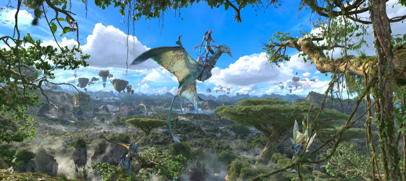
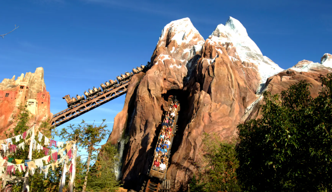
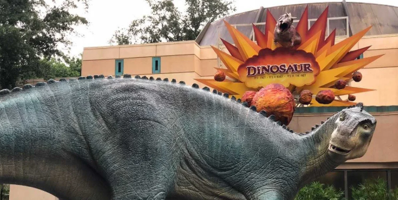
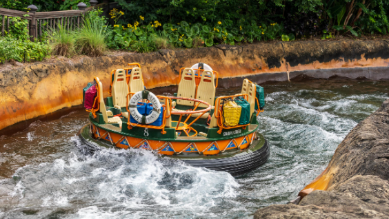

Animal Kingdom - Thrill Seeking Day
For starters most of these rides have a minimum 48 inches height requirement. So take that into consideration even if you have kids who love rollercoasters. This park is themed around you guessed it animals. However, not just Disney animals, but all animals from all kinds of different regions. In order to make sure that your wait time is as small as possible it is important to be there right when the park opens. This park is going to be your earliest day with the park opening most days at 8am.
Avatar Flight of Passage
The very first ride that you head to once you are in the parks is going to be Avatar Flight of Passage. This ride typically has a long queue and towards the middle of the day it can be around two hours or more. By heading there first thing when the park opens you will have around a 20 to 30 min wait if not less. The longer you wait the longer the line will get. This ride is a virtul reality ride that takes you high up so make sure you take that into consideration as well. If you are prone to motion sickness this may not be the ride for you.
Expedition Everest
This ride is about an 8-10 minute walk depending on how fast you walk. During the morning because everyone is trying to ride Flight of Passage or Kilimanjaro Safaris this ride is pretty much a walk on. This is a rollercoaster type ride with lots of drops and even taking you backwards at one point. Because the line is so short in the morning I recomend riding it a few times while you are over there.
DINOSAUR
This ride is located in Dinoland USA so make sure to head on over. This ride can build up quite the line especially if it is a hot day. You are inside where you travel back in time to the Cretasous period.
Kali River Rapids
Finally head over to Kali River Rapids especially if it is a hot day! If you don't mind getting wet this is the next ride on the list. This ride takes you through the rapids on a raft make sure that you head over pretty quickly because during the summer this line can get really long for guest looking to cool off.